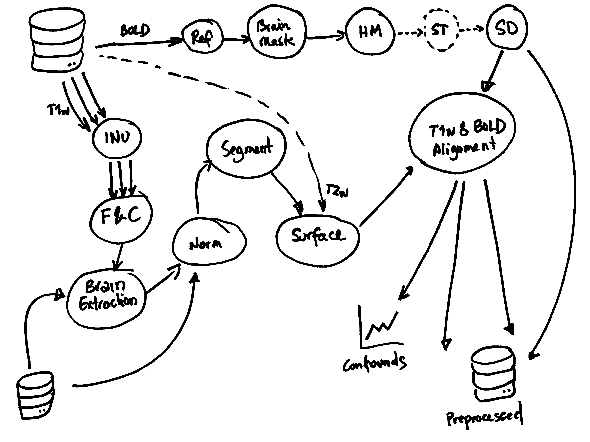
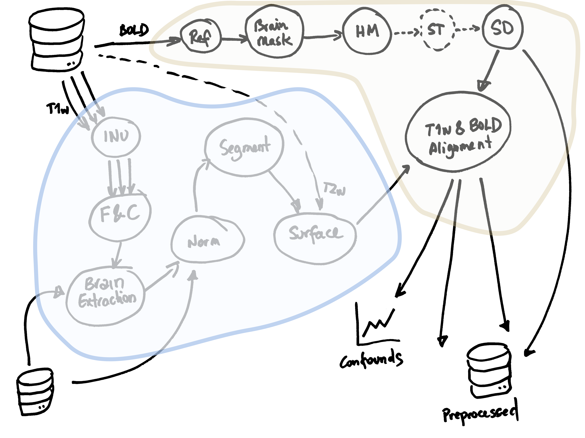
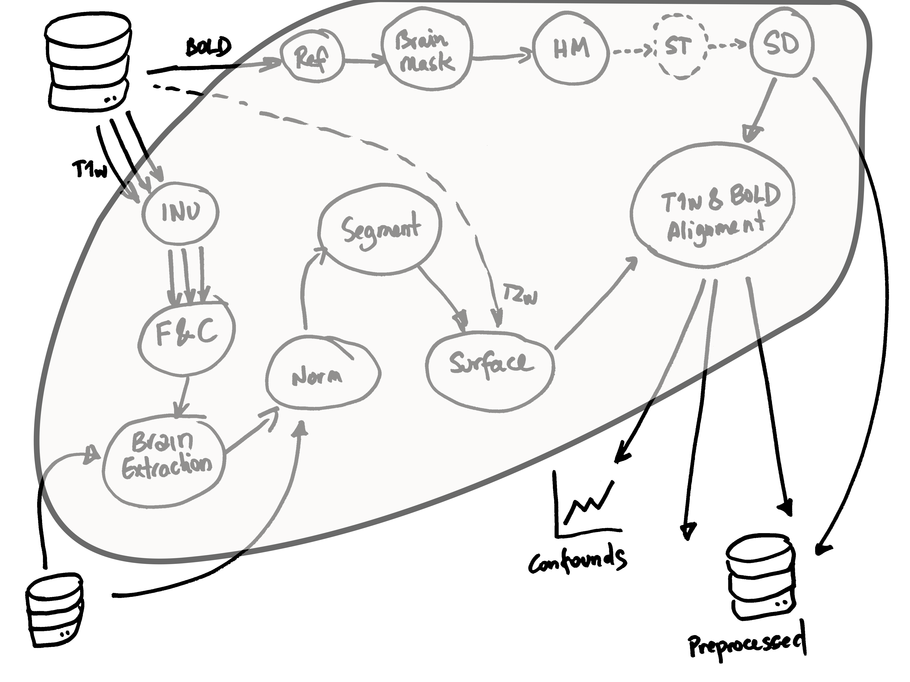
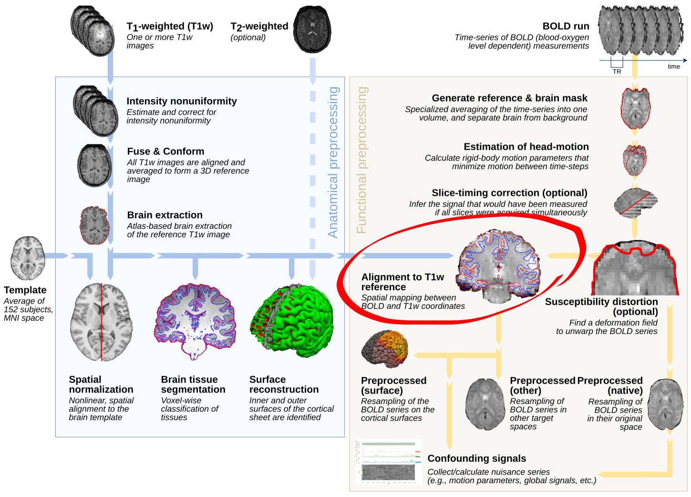
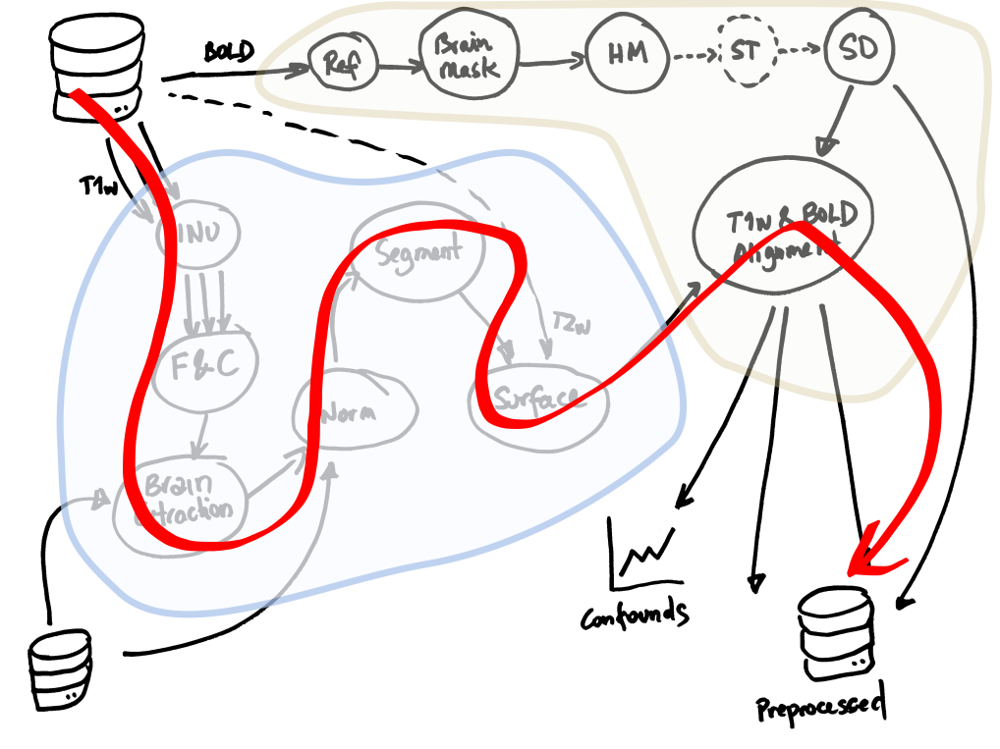

class: roulette-config .roulette-roster[ # Class roster (for roulettes) <div class="rr-config-wrap"> <div class="rr-col"> <label>Attendees (one per line)</label> <div contenteditable="true" role="textbox" aria-multiline="true" data-roulette="attendees" data-gramm="false" data-gramm_editor="false" data-lt-active="false" data-lpignore="true" spellcheck="false" class="notranslate" style="white-space: pre-wrap; min-height: 240px; padding: .5rem; border: 1px solid #ccc; border-radius: 6px;"><!-- -->Ada Lovelace Grace Hopper Alan Turing </div> <div class="rr-col"> <label>Organizers (one per line)</label> <div contenteditable="true" role="textbox" aria-multiline="true" data-roulette="organizers" data-gramm="false" data-gramm_editor="false" data-lt-active="false" data-lpignore="true" class="notranslate" spellcheck="false" style="white-space: pre-wrap; min-height: 240px; padding: .5rem; border: 1px solid #ccc; border-radius: 6px;"></div> </div> </div> ] --- name: title layout: true class: center --- layout: false count: false .center[ <a href="https://oesteban.github.io/talks/20250820-medgift/"> <object type="image/svg+xml" data="images/qr-talk-url.svg" style="width: 20%"></object> <br /> https://oesteban.github.io/talks/20250820-medgift/ </a> <br /> <br /> ## Introduction to data pipelines Oscar Esteban <<code>oscar.esteban@hevs.ch</code>> <br /> ### 302 Data computation Day 1 — 15.09.2025 ] ??? --- name: newsection layout: true .perma-sidebar[ <p class="rotate"> <a rel="license" href="http://creativecommons.org/licenses/by/4.0/"><img alt="Creative Commons License" style="border-width:0; height: 20px; padding-top: 6px;" src="https://i.creativecommons.org/l/by/4.0/88x31.png" /></a> <span style="padding-left: 10px; font-weight: 600;">Introduction to data pipelines (15.09.2025)</span> </p> ] --- # Objectives .boxed-content.larger.no-bullet[ * .large[<i class="fa-solid fa-circle-right"></i> Explain **data transformations**] <br /> .indent[.gray-text[and identify/create examples]] <br /> * .large[<i class="fa-solid fa-circle-right"></i> Recognize how **tasks depend on one another**] <br /> .indent[.gray-text[without feedback loops, contrast pipelines vs. representations of the internal flow of tasks]] <br /> * .large[<i class="fa-solid fa-circle-right"></i> Apply **DAGs** to represent pipelines] <br /> .indent[.gray-text[correctly encoding tasks and dependencies, and understand pipeline nesting/flattening]] <br /> * .large[<i class="fa-solid fa-circle-right"></i> **ETL vs. ELT**, **warehouse/mart vs. lake**.] <br /> <br /> * .large[<i class="fa-solid fa-circle-right"></i> Describe the notion of **scaling** and **resource limitations**] <br /> .indent[.gray-text[e.g., laptop vs. HPC]] <br /> * .large[<i class="fa-solid fa-circle-right"></i> Establish a functional **Docker environment**.] <br /> .indent[.gray-text[Execute processing tasks on a laptop given a Docker environment with a prepared Jupyter notebook.]] ] --- # Schedule .boxed-content.program-table[ | Time | Content | |:--:|:--| | 9h20 | Quick quiz (**not graded**). | | 9h40 | Explaining a pipeline (**intro**). | | 9h50 | .gray-text[Break] | | 10h10 | **Roulette**: Explaining a pipeline (game). | | 10h40 | **Class**: from the pipeline to DAGs. | | 11h15 | **Guided tutorial**: Docker primer | | 11h45 | .gray-text[Lunch break] | | | | | 12h45 | **Lab**: brain pipeline | | 15h20 | Quick quiz (repetition) | | 15h35 | Discussion of quiz & **outlook** for next session | | 15h50 | Voluntary time | | 16h10 | .gray-text[End] | ] --- .section-mark[ # Quick quiz .large[20 minutes, not graded] ] --- .section-mark[ # Data pipelines .large[Deep dive into one real processing pipeline] ] --- # Roulette game: explaining this pipeline .boxed-content.center[ <object type="image/svg+xml" data="day1-workflow-nolabels.svg" style="width: 70%; padding-top: 10pt;"></object> ] ??? Let's begin with a little game. We will play another roulette, and a name will be called up for 90 seconds to explain one step in this figure. You can explain any of the pictures in this flowchart, so long it hasn't been picked already by another classmate. You don't have to be right, just explain one step. You can invent a sci-fi story if you wish, the only problem is that your fantasy may make it a little more difficult for those who come after you and have to explain downstream steps. Because you don't know when you're going to be called, it's nice that you try to say something sensible here. But remember, you're not required to, just try to help the team describe this data processing pipeline. Please look at it carefully, we will play the game after the break. --- .section-mark[ # Short break .large[We reconvene .timer[in 10 minutes].] ] --- class: roulette time: 75 .boxed-content.center[ <object type="image/svg+xml" data="day1-workflow-nolabels.svg" style="width: 85%; padding-top: 10pt;"></object> ] --- .boxed-content.center[ <object type="image/svg+xml" data="day1-workflow.svg" style="width: 85%; padding-top: 10pt;"></object> ] --- .section-mark[ # Transforming data .large[First steps into Big Data analysis] ] ??? We've just described a workflow together. Now, let's formalize what makes a workflow a pipeline, and how we represent and reason about it. --- # Pipelines: a specific type of workflows .boxed-content.center[ <object type="image/svg+xml" data="day1-workflow.svg" style="width: 55%; padding-top: 20pt;"></object> .pull-right[ <img alt="River system" src="https://upload.wikimedia.org/wikipedia/commons/thumb/7/75/Seine_drainage_basin.png/960px-Seine_drainage_basin.png?20080325210846" style="visibility: hidden; width: 90%; margin-top: 20px; padding: 4px; border: 1px solid #ccc; box-shadow: 2px 2px 6px rgba(0,0,0,0.3);" /> ] <br /> ] ??? Here's the full neuroimaging workflow we just reconstructed. This is one example of a domain-specific pipeline — but the concepts we'll learn today generalize far beyond neuroimaging. We identified tasks, inputs, outputs and dependencies. --- count: false # Pipelines: a specific type of workflows .boxed-content.center[ <object type="image/svg+xml" data="day1-workflow.svg" style="width: 55%; padding-top: 20pt;"></object> .pull-right[ .large[ ## Tasks ] ] <br /> ] ??? - Tasks are the boxes (e.g., "skull stripping", "spatial normalization") — they represent a transformation of data. --- count: false # Pipelines: a specific type of workflows .boxed-content.center[ <object type="image/svg+xml" data="day1-workflow.svg" style="width: 55%; padding-top: 20pt;"></object> .pull-right[ .large[ ## Tasks ## Inputs and outputs ] ] <br /> ] ??? - Inputs and outputs are the arrows (e.g., "T1w image", "brain mask") — they represent data at different stages of the workflow. --- count: false # Pipelines: a specific type of workflows .boxed-content.center[ <object type="image/svg+xml" data="day1-workflow.svg" style="width: 55%; padding-top: 20pt;"></object> .pull-right[ .large[ ## Tasks ## Inputs and outputs ## Dependencies ] ] <br /> ] ??? - Dependencies are the connections between tasks (e.g., "skull stripping" must be done before "spatial normalization") — they represent the order in which tasks must be executed. --- count: false # Pipelines: a specific type of workflows .boxed-content.center[ <object type="image/svg+xml" data="day1-workflow.svg" style="width: 55%; padding-top: 20pt;"></object> .pull-right[ <img alt="River system" src="https://upload.wikimedia.org/wikipedia/commons/thumb/7/75/Seine_drainage_basin.png/960px-Seine_drainage_basin.png?20080325210846" style="width: 90%; margin-top: 20px; padding: 4px; border: 1px solid #ccc; box-shadow: 2px 2px 6px rgba(0,0,0,0.3);" /> ] <br /> .large[Like a river system, pipelines have **no feedback loops**] ] ??? But there's one critical characteristic that makes pipelines different from general workflows: they have no feedback loops. They are like a river system: water flows from the source to the sea, but never back upstream. There can be many tributaries (inputs) and distributaries (outputs), but the flow is always downstream. --- # Why do we need pipelines? .boxed-content[ <object type="image/svg+xml" data="images/big-data-workflow-03.svg" style="width: 100%; padding-top: 20pt;"></object> ] ??? Let's step back and consider the most general data processing workflow. Overall, the data pipeline channels the flow of data from its initial capture to its final consumption. Data can very rarely be analyzed or applied as they are generated or collected. They need to be transformed before they can be used for analysis or decision. This is why they are usually preprocessed, which involves transformations involving filtering, cleaning, normalizing, aggregating, etc. Then, data are analyzed or "modeled", which can involve statistical analysis, machine learning,etc. Finally, the results of the analysis are interpreted, visualized, and used to make decisions or take actions --- # Why do we need pipelines? .boxed-content[ <object type="image/svg+xml" data="images/big-data-workflow-00.svg" style="width: 100%; padding-top: 20pt;"></object> ] ??? Data capture and ingestion can involve collecting data from various sources, such as sensors, databases, or user inputs. This data may be stored in a raw format. --- count: false # Why do we need pipelines? .boxed-content[ <object type="image/svg+xml" data="images/big-data-workflow-01.svg" style="width: 100%; padding-top: 20pt;"></object> ] ??? Because raw formats are often not suitable for analysis, data need to be transformed through a series of steps in preprocessing. For example, we may apply a smoothing filter to reduce noise in temperature time series, normalize values to a Kelvin scale or aggregate data from several thermometers. --- count: false # Why do we need pipelines? .boxed-content[ <object type="image/svg+xml" data="images/big-data-workflow-02.svg" style="width: 100%; padding-top: 20pt;"></object> ] ??? During modeling, we identify patterns, trends, or relationships in the data. We also prepare them for consumption or decision, e.g., by generating visualizations or summary statistics. --- count: false # Why do we need pipelines? .boxed-content[ <object type="image/svg+xml" data="images/big-data-workflow-03.svg" style="width: 100%; padding-top: 20pt;"></object> ] ??? Finally, the results of the analysis are interpreted, visualized, and used to make decisions or take actions. Following our example of temperature data, the system may decide to start a cooling fan if the temperature exceeds a certain threshold for a given period of time. --- # Use cases: medical data .boxed-content.center[ <object type="image/svg+xml" data="images/pipeline-examples-medical-0.svg" style="width: 95%; padding-top: 50pt;"></object> ] --- count: false # Use cases: medical data .boxed-content.center[ <object type="image/svg+xml" data="images/pipeline-examples-medical-1.svg" style="width: 95%; padding-top: 50pt;"></object> ] --- count: false # Use cases: medical data .boxed-content.center[ <object type="image/svg+xml" data="images/pipeline-examples-medical-2.svg" style="width: 95%; padding-top: 50pt;"></object> ] --- count: false # Use cases: medical data .boxed-content.center[ <object type="image/svg+xml" data="images/pipeline-examples-medical-3.svg" style="width: 95%; padding-top: 50pt;"></object> ] --- count: false # Use cases: medical data .boxed-content.center[ <object type="image/svg+xml" data="images/pipeline-examples-medical-4.svg" style="width: 95%; padding-top: 50pt;"></object> ] --- # Use cases: geospatial .boxed-content.center[ <object type="image/svg+xml" data="images/pipeline-examples-geo-0.svg" style="width: 95%; padding-top: 50pt;"></object> ] --- count: false # Use cases: geospatial .boxed-content.center[ <object type="image/svg+xml" data="images/pipeline-examples-geo-1.svg" style="width: 95%; padding-top: 50pt;"></object> ] --- count: false # Use cases: geospatial .boxed-content.center[ <object type="image/svg+xml" data="images/pipeline-examples-geo-2.svg" style="width: 95%; padding-top: 50pt;"></object> ] --- count: false # Use cases: geospatial .boxed-content.center[ <object type="image/svg+xml" data="images/pipeline-examples-geo-3.svg" style="width: 95%; padding-top: 50pt;"></object> ] --- count: false # Use cases: geospatial .boxed-content.center[ <object type="image/svg+xml" data="images/pipeline-examples-geo-4.svg" style="width: 95%; padding-top: 50pt;"></object> ] --- class: roulette time: 75 .boxed-content.center[ <object type="image/svg+xml" data="images/pipeline-examples-generic.svg" style="width: 95%; padding-top: 100pt;"></object> ] --- # Pipelines as DAGs .boxed-content.center[ .pull-right[  ] .pull-left[ <object type="image/svg+xml" data="day1-workflow.svg" style="width: 100%; padding-top: 40pt;"></object> ] <br /> .large[We can represent pipelines as *Directed Acyclic Graphs* (DAGs)] ] ??? The cleanest way to represent pipelines is with Directed Acyclic Graphs. Tasks are nodes, dependencies are edges. DAGs make it explicit what can run in parallel and what must wait --- # Pipelines as DAGs: they can be arbitrarily nested ... .boxed-content.center[ .pull-right[  ] .pull-left[ <object type="image/svg+xml" data="day1-workflow.svg" style="width: 100%; padding-top: 40pt;"></object> ] <br /> .large[But they remain **Acyclic**] ] ??? --- count: false # Pipelines as DAGs: they can be arbitrarily nested ... .boxed-content.center[ .pull-right[  ] .pull-left[ <object type="image/svg+xml" data="day1-workflow.svg" style="width: 100%; padding-top: 40pt;"></object> ] <br /> .large[But they remain **Acyclic**] ] ??? --- # ... and flattened .boxed-content.center[ .pull-right[ <img alt="A DAG" src="https://fmriprep.org/en/stable/_images/api-9.png" style="width: 90%; margin-top: -60px; padding: 4px; border: 1px solid #ccc; box-shadow: 2px 2px 6px rgba(0,0,0,0.3);" /> ] .pull-left[  .large[Example: subtasks in the alignment step] ] ] ??? --- # Task latency: time from start to finish .boxed-content.center[ <object type="image/svg+xml" data="images/pipeline-latency-medium.svg" style="width: 95%; padding-top: 100pt;"></object> ] ??? --- count: false # Task latency: time from start to finish .boxed-content.center[ <object type="image/svg+xml" data="images/pipeline-latency-large.svg" style="width: 95%; padding-top: 100pt;"></object> ] ??? --- count: false # Task latency: time from start to finish .boxed-content.center[ <object type="image/svg+xml" data="images/pipeline-latency-short.svg" style="width: 95%; padding-top: 100pt;"></object> ] ??? --- # Total latency (linear pipeline) .boxed-content.center[ <object type="image/svg+xml" data="images/pipeline-latency-total.svg" style="width: 95%; padding-top: 100pt;"></object> ] ??? --- count: false # Total latency (linear pipeline) .boxed-content.center[ <br /> .large[Q: How to increase **throughput**?] <object type="image/svg+xml" data="images/pipeline-latency-total.svg" style="width: 95%; padding-top: 18pt;"></object> ] ??? --- # Nonlinear pipeline (DAGs with parallel paths) .boxed-content.center[ ] ??? --- # Critical path .boxed-content.center[  .large[the dependency chain with *longest total latency*] ] ??? Emphasize: speeding up a non-critical task often doesn't change the makespan. --- # Amdahl's law (upper bound on speedup) .pull-left[ <br /> .larger[Given a fixed workload, the latency speedup $S_\text{latency}$ relates to fraction of parallelizable work $p$ and parallelization factor $s$ as:] .large[ \\[ S_\text{latency} \le \frac{1}{1 - p + \frac{p}{s}} \\] ] .larger[When $s \to \infty$, then $S_\text{latency} \le \frac{1}{1 - p}$.] .gray-text[ If only 10% of the total latency is parallelizable ($p=0.1$), then $S_\text{latency} \le 1.11$, then with infinite resources we can only speed up the total latency by 11%. ] ] .pull-right.center[ <br /> <a href="https://commons.wikimedia.org/wiki/File:AmdahlsLaw.svg#/media/File:AmdahlsLaw.svg"> <img alt="River system" src="https://upload.wikimedia.org/wikipedia/commons/e/ea/AmdahlsLaw.svg" style="width: 90%; margin-top: 20px; padding: 4px; border: 1px solid #ccc; box-shadow: 2px 2px 6px rgba(0,0,0,0.3);" /> </a><br>By <a href="https://en.wikipedia.org/wiki/User:Daniels220" class="extiw" title="wikipedia:User:Daniels220">Daniels220</a> at <a href="https://en.wikipedia.org/wiki/Amdahl%27s_law" class="extiw" title="wikipedia:">Wikipedia</a>, <a href="https://creativecommons.org/licenses/by-sa/3.0" title="Creative Commons Attribution-Share Alike 3.0">CC BY-SA 3.0</a> ] ??? Use this to reason about “worth it?” before scaling out. --- # Trending topic: ETL vs. ELT .section-mark.large.no-bullet[ * .large[**ETL** = Extract → Transform → Load] <br /> .indent[.gray-text[Curate/clean **before** loading into the destination.]] <br /> <br /> * .large[**ELT** = Extract → Load → Transform] <br /> .indent[.gray-text[Load **raw** data first, then transform **in-place**.]] ] ??? Examples: - ETL: nightly batch jobs transform CSVs with a Python/DBT job, then load into a data warehouse table used by BI. - ELT: land raw JSON into object storage or a warehouse staging schema; then run SQL/Notebooks to materialize curated tables. --- # ETL or ELT: When? .boxed-content.no-bullet[ * .large[<i class="fa-solid fa-circle-right"></i></i> **ETL**:] <br /> .indent.larger[Regulatory constraints require curated/validated data **before** it's stored; destination compute is limited/expensive.] <br /> * .large[<i class="fa-solid fa-circle-right"></i></i> **ELT**:] <br /> .indent.larger[Destination engine is powerful/elastic; many downstream use-cases need access to **raw** history; speed of iteration matters.] <br /> * .large[<i class="fa-solid fa-shuffle"></i></i> Hybrid patterns exist:] <br /> .indent.larger[Light **pre-load** checks (anonymization, schema validation) + **post-load** modeling (ELT).] ] ??? --- count: false # ETL or ELT: When? .boxed-content.no-bullet[ * .large[<i class="fa-solid fa-circle-right"></i></i> **ETL**:] <br /> .indent.larger[Regulatory constraints require curated/validated data **before** it's stored; destination compute is limited/expensive.] <br /> * .large[<i class="fa-solid fa-circle-right"></i></i> **ELT**:] <br /> .indent.larger[Destination engine is powerful/elastic; many downstream use-cases need access to **raw** history; speed of iteration matters.] <br /> * .large[<i class="fa-solid fa-shuffle"></i></i> Hybrid patterns exist:] <br /> .indent.larger[Light **pre-load** checks (anonymization, schema validation) + **post-load** modeling (ELT).] <br /> .large.gray-text.center[What would you choose for a clinical MRI pipeline?] ] ??? --- # Data Warehouse, mart & lake <br /> .boxed-content.no-bullet[ * .large[<i class="fa-solid fa-warehouse"></i></i> **Data warehouse** (DW)] <br /> .indent.larger[Curated, **structured** data optimized for analytics (columnar, SQL, governance).] <br /> * .large[<i class="fa-solid fa-store"></i></i> **Data mart**] <br /> .indent.larger[Subject-area subset of the warehouse (team/product-focused).] <br /> * .large[<i class="fa-solid fa-water"></i></i> **Data lake** (DL)] <br /> .indent.larger[Raw/semistructured data on object storage; **schema-on-read**; diverse formats.] ] ??? - Warehouse: BigQuery/Snowflake/Redshift curated tables. - Mart: Finance or Clinical mart from the central warehouse. - Lake: S3/ADLS/GCS with Parquet/JSON, images, binaries. --- .boxed-content.center[ <br /> .large[ | Aspect | ETL | ELT | |:--|:--|:--| | **Compute location** | Outside DW | Inside DW/DL | | **Governance** | Strong control | Flexible; enforce at query/model time | | **Storage** | Smaller curated footprint | Large (keep raw + curated) | | **Latency** | Often batch windows | Can be low with incremental models | | **Cost model** | ETL infra + DW | Mostly DW/DL compute + storage | | **Flexibility** | Fixed curated schema | High (schema-on-read patterns) | ] ] ??? - ETL feels familiar to strict pipelines (neuroimaging with rigid file contracts). - ELT is popular where warehouses scale elastically. --- .section-mark[ # Short break .large[We reconvene .timer[in 10 minutes].] ] --- .section-mark[ # <i class="fa-brands fa-docker large"></i> # Docker primer .large[Getting started with Docker] ] --- # What's Docker? .boxed-content.larger[ > Docker is a set of [platform as a service](https://en.wikipedia.org/wiki/Platform_as_a_service) (PaaS) products that use [OS-level virtualization](https://en.wikipedia.org/wiki/OS-level_virtualization) to deliver software in packages called [containers](https://en.wikipedia.org/wiki/Container_%28virtualization%29). > <br /> > <br /> > (...) > <br /> > <br /> > Docker is a tool that is used to automate the **deployment** of **applications** in lightweight **containers** so that applications can work efficiently in different environments in isolation. .align-right[ [Wikipedia](https://en.wikipedia.org/wiki/Docker_%28software%29) ] ] ??? --- # Containers vs. virtual machines .boxed-content.center[ <img src="https://wac-cdn.atlassian.com/dam/jcr:92adde69-f728-4cfc-8bab-ba391c25ae58/SWTM-2060_Diagram_Containers_VirtualMachines_v03.png" style="width: 100%; padding-top: 20px;"/> .align-right[ Source: [Atlassian](https://www.atlassian.com/microservices/cloud-computing/containers-vs-vms) ] ] ??? --- # Installing Docker <br /> .boxed-content.large.no-bullet[ * <i class="fa-brands fa-linux"></i> .larger[**Linux Users**] <br /> .indent[.gray-text[Install the **Docker Engine** ([instructions](https://docs.docker.com/engine/install/) for <i class="fa-brands fa-ubuntu"></i> <i class="fa-brands fa-suse"></i> <i class="fa-brands fa-redhat"></i> <i class="fa-brands fa-fedora"></i> <i class="fa-brands fa-centos"></i> <i class="fa-brands fa-raspberry-pi"></i>).]] <br /> * <i class="fa-brands fa-windows"></i> <i class="fa-brands fa-apple"></i> .larger[**Windows and Mac Users**] <br /> .indent[.gray-text[Install the **Docker Desktop** ([instructions](https://docs.docker.com/desktop/)).]] ] --- .boxed-content[ <div class="asciicast" id="docker-info" style="padding-top: 25px"></div> ] --- .boxed-content[ <div class="asciicast" id="docker-whalesay" style="padding-top: 25px"></div> ] --- .boxed-content[ <div class="asciicast" id="docker-pull" style="padding-top: 25px"></div> ] --- .section-mark[ # Lunch break .large[We reconvene in <span class="timer">1 hour</span>.] ] --- .section-mark[ # Lab .large[A first processing pipeline for brain extraction and segmentation from anatomical MRI] ] --- # Steps .boxed-content.no-bullet[ * .large[<i class="fa-solid fa-circle-right"></i> We will use a prepared Docker image with all dependencies installed.] * .large[<i class="fa-solid fa-circle-right"></i> We *pulled* the image before:] .indent.large[ ``` Python docker run --rm -it -p 8888:8888 oesteban/neuropipeline-302 ``` * `oesteban/neuropipeline-302` is the image name * `--rm` removes the container after exiting * `-it` interactive terminal * `-p 8888:8888` maps port 8888 in the container to port 8888 on the host ] * .large[<i class="fa-solid fa-circle-right"></i> Once the container is spun up, the output will show a URL to access the Jupyter notebook server.] ] ??? --- .section-mark[ # Quick quiz (repeat) .large[20 minutes, not graded] ] --- .section-mark[ # Concluding .large[Discuss the quiz answers and outlook for next session] ] --- .section-mark[ # End .large[See you next time: 18.09.2025 @ 8h15 (in <span class="timer" data-until="2025-09-18T08:15:00+02:00"></span>)] ]